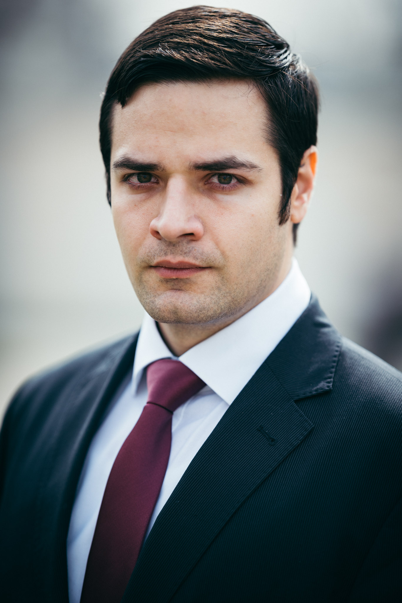
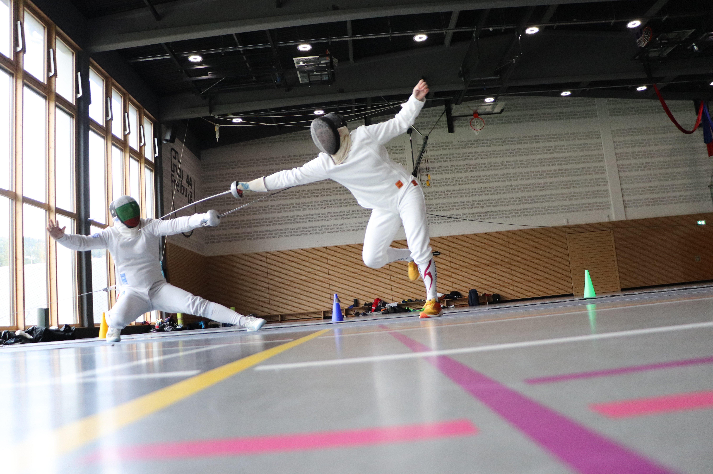
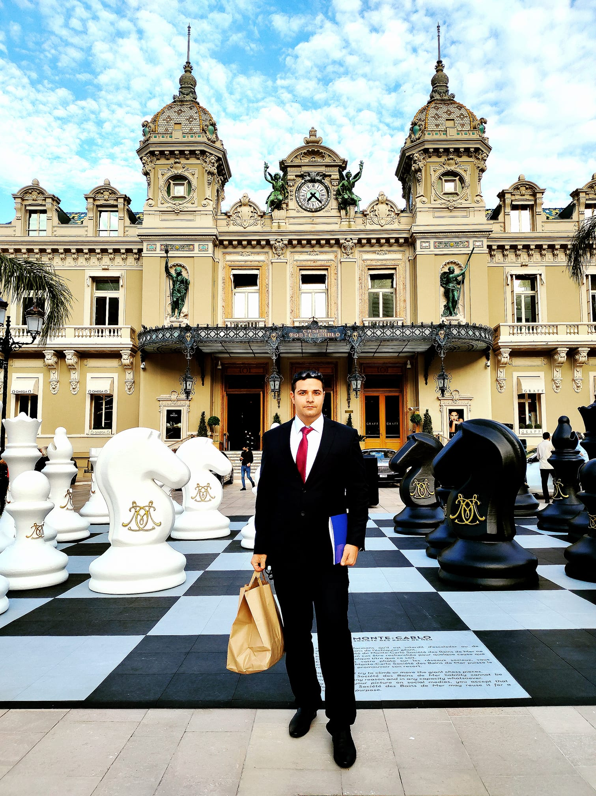
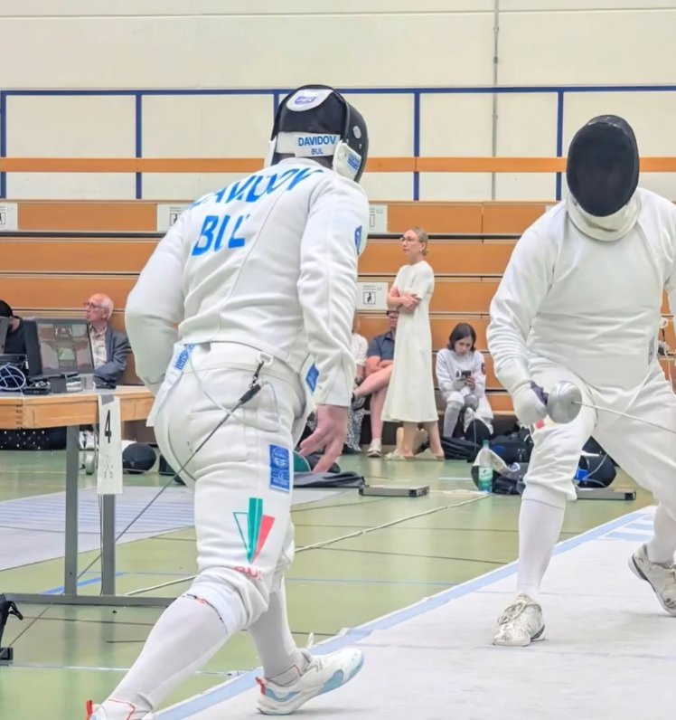
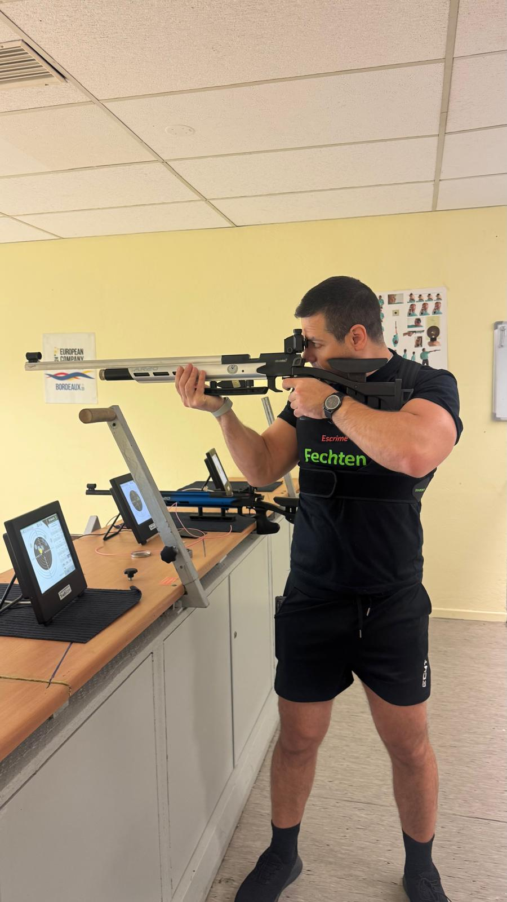
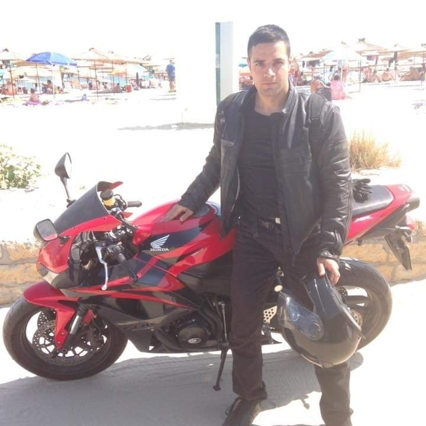
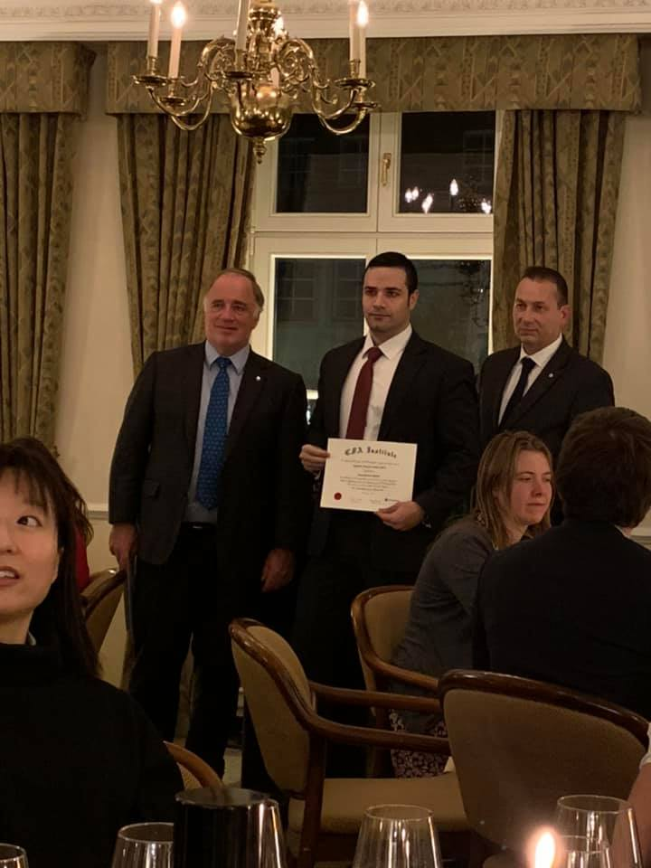

Il faut toujours viser la lune, car même en cas d'échec, on atterrit dans les étoiles. — Oscar Wilde

Senior quantitative finance professional with over a decade of experience across multi-asset portfolio management, risk modelling, proprietary trading, and algorithmic strategy development. Based in Frankfurt, with a career spanning Vienna, Monaco, Paris, and Luxembourg.
Holder of five professional designations — CFA, FRM, CAIA, CMT, and CQF — alongside three master's degrees and an active PhD candidacy in Data Science. Academic researcher and co-author of peer-reviewed work in commodity markets and digital assets.
Equally at home in a Bloomberg terminal, a research paper, or on the fencing piste.






Open to senior buy-side roles, academic collaborations, and interesting conversations.
davidovboyan@gmail.com